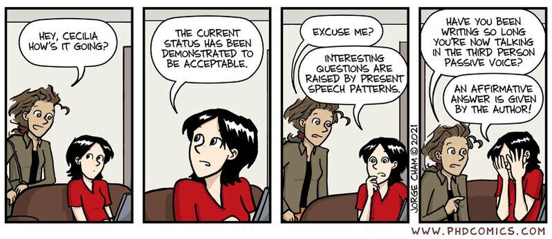

Potentially Helpful Resources
This page contains links & commentary to various references and resources that I believe may be useful for bioinformatics research, or for graduate research in general.
-
Passive Voice

Markdown
It is okay to use active voice in academic papers, especially in context where confusion may arise for readers not being able to track the subject and action. Passive voice does convey a more objective tone and is highly prevalent in scientific articles, but at times it is important to recognize that one ought not to bring a knife to a gun fight. Purdue's Online Writing Lab is a good place for references on academic writing.
Markdown is one of the most commonly used markup languages in computing today, and offers tremendous value in computational biology. While there is some variation to Markdown, the GitHub "flavor" (see PDF cheatsheet) is perhaps the best place for you to get started. If you want a "what you see is what you get" editor to check or try out a few syntax commands, try this here (a similar version is available locally in rg20 via the Memo feature from the application node).